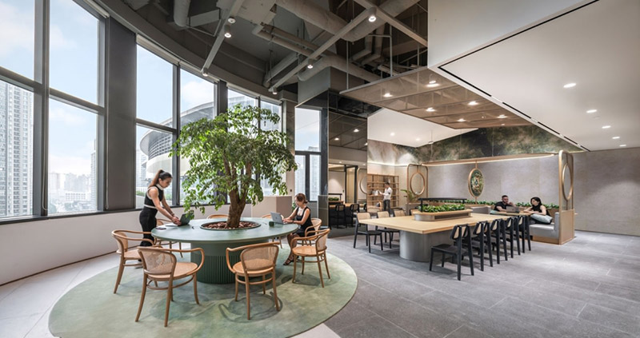
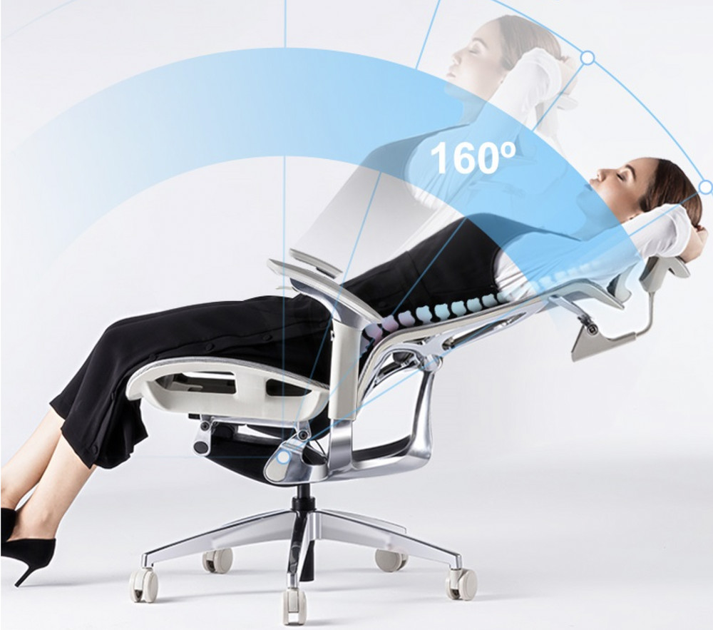
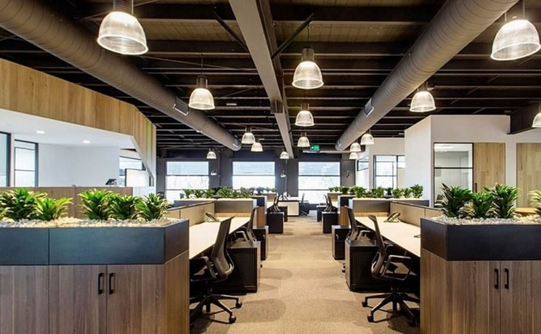
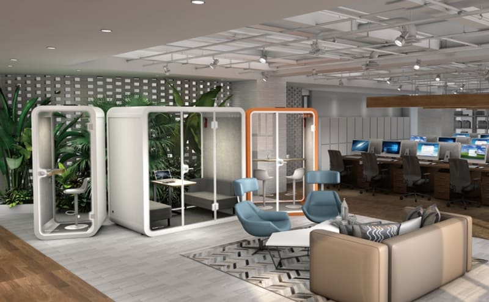
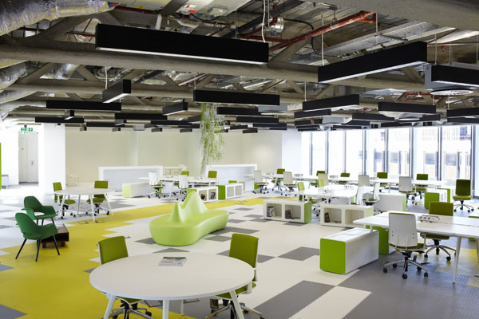

Thiết kế văn phòng mở không thể thiếu phụ kiện này
Thiết kế văn phòng mở đang ngày càng trở nên phổ biến nhờ khả năng thúc đẩy sự cộng tác, giao tiếp và
sáng tạo giữa các thành viên. Tuy nhiên, để tối ưu hóa hiệu quả làm việc và tạo ra một môi trường
thoải mái, chuyên nghiệp, việc lựa chọn đúng những phụ kiện hỗ trợ là vô cùng quan trọng. Một không
gian mở được trang bị tốt không chỉ nâng cao năng suất mà còn góp phần xây dựng văn hóa doanh nghiệp
tích cực và gắn kết. Cùng Blog nội thất Flexhouse VN khám phá những phụ kiện nội thất văn phòng
không thể thiếu giúp bạn hoàn thiện nơi làm việc lý tưởng.
Xu hướng thiết kế văn phòng mở hiện nay
Thiết kế văn phòng mở là một xu hướng kiến trúc hiện đại, phá bỏ những bức tường ngăn cách cứng nhắc
của văn phòng truyền thống, tạo nên một không gian làm việc chung, rộng mở và thoáng đãng. Xu hướng
này không chỉ tối ưu hóa diện tích sử dụng, tận dụng tối đa ánh sáng tự nhiên, tạo cảm giác rộng
rãi, mà còn khuyến khích sự tương tác, trao đổi thông tin giữa các nhân viên.

Xu hướng thiết kế văn phòng mở hiện nay
Việc giao tiếp trực tiếp, dễ dàng hơn giúp thúc đẩy tinh thần đồng đội, nâng cao hiệu suất công việc
và khơi nguồn cảm hứng sáng tạo. Mặc dù vậy, thiết kế văn phòng mở cũng đặt ra một số thách thức,
đặc biệt là về việc cân bằng giữa không gian chung và nhu cầu riêng tư của từng cá nhân, cũng như
việc kiểm soát tiếng ồn để đảm bảo môi trường làm việc tập trung. Do đó, việc lựa chọn và bố trí nội
thất, phụ kiện một cách thông minh và khoa học chính là chìa khóa để tạo nên một văn phòng mở thực
sự hiệu quả.
Những phụ kiện không thể thiếu trong thiết kế văn phòng mở
Thiết kế văn phòng mở ngày càng được ưa chuộng bởi khả năng tối ưu không gian, thúc đẩy sự cộng tác
và tạo nên môi trường làm việc năng động. Tuy nhiên, để một văn phòng mở thực sự hiệu quả, cần có sự
kết hợp hài hòa giữa không gian và các phụ kiện hỗ trợ. Dưới đây là những phụ kiện không thể thiếu,
đóng góp quan trọng vào sự thành công của một thiết kế văn phòng mở:
Bàn làm việc
Bàn làm việc là trung tâm của mọi hoạt động trong văn phòng, nơi diễn ra phần lớn công việc hàng
ngày. Do đó, việc lựa chọn bàn làm việc phù hợp là yếu tố cực kỳ quan trọng, ảnh hưởng trực tiếp đến
hiệu suất và sự thoải mái của nhân viên.
Cần cân nhắc kỹ lưỡng về kiểu dáng, kích thước và chất liệu để đảm bảo bàn làm việc đáp ứng được nhu
cầu công việc và phù hợp với không gian văn phòng. Bàn làm việc đơn phù hợp với không gian làm việc
cá nhân, yêu cầu tính tập trung cao. Bàn đôi dành cho sự hợp tác giữa hai người, thuận tiện cho việc
trao đổi thông tin.
Bàn nhóm lý tưởng cho các dự án đòi hỏi sự cộng tác của nhiều thành viên. Bàn module linh hoạt cho
phép tùy chỉnh và sắp xếp theo nhu cầu, tối ưu hóa không gian sử dụng. Về chất liệu, nên ưu tiên
những chất liệu bền bỉ, chống trầy xước, dễ dàng vệ sinh và có tính thẩm mỹ cao, hài hòa với phong
cách thiết kế tổng thể của văn phòng.
Ghế văn phòng
Đầu tư vào một chiếc ghế văn phòng chất lượng là đầu tư cho sức khỏe và năng suất làm việc của nhân
viên. Một chiếc ghế tốt không chỉ mang lại sự thoải mái trong suốt thời gian làm việc mà còn giúp
ngăn ngừa các vấn đề về sức khỏe, đặc biệt là các bệnh liên quan đến cột sống, đau mỏi cổ vai gáy
thường gặp ở dân văn phòng.
Ghế công thái học (ergonomic) được thiết kế khoa học, hỗ trợ tư thế ngồi đúng, có thể điều
chỉnh độ cao, độ ngả lưng, tựa đầu… để phù hợp với từng cá nhân, giúp giảm thiểu căng thẳng, mệt mỏi
và nâng cao hiệu suất làm việc.

Ghế công thái học dành cho văn phòng mở
Tấm tiêu âm
Tiếng ồn là một trong những vấn đề nan giải của văn phòng mở, ảnh hưởng lớn đến sự tập trung
và hiệu
quả làm việc của nhân viên. Tấm tiêu âm là giải pháp hữu hiệu để kiểm soát tiếng ồn, hấp thụ âm
thanh hiệu quả, giảm thiểu tiếng ồn, tạp âm từ các hoạt động xung quanh, tạo nên môi trường làm việc
yên tĩnh và thoải mái hơn.
Tấm tiêu âm có thể được lắp đặt trên tường hoặc trần nhà, tùy theo thiết kế và nhu cầu cụ thể của
từng văn phòng. Ngoài tác dụng tiêu âm, tấm tiêu âm còn có thể đóng vai trò như một yếu tố trang
trí, tăng tính thẩm mỹ cho không gian.
Đèn chiếu sáng
Ánh sáng đóng vai trò quan trọng trong việc tạo ra một môi trường làm việc thoải mái, kích thích sự
sáng tạo và bảo vệ thị lực cho nhân viên. Trong thiết kế văn phòng mở, cần tận dụng tối đa ánh sáng
tự nhiên và bổ sung ánh sáng nhân tạo một cách hợp lý. Đèn led âm trần, đèn để bàn với ánh sáng dịu
nhẹ, không gây chói mắt là lựa chọn phù hợp. Việc bố trí đèn chiếu sáng khoa học, đảm bảo độ sáng
phù hợp cho từng khu vực làm việc sẽ giúp nâng cao hiệu suất và tạo cảm giác thoải mái cho nhân
viên.

Đèn chiếu sáng văn phòng
Phụ kiện trang trí
Những phụ kiện trang trí như cây xanh, tranh ảnh, thảm trải sàn… không chỉ làm đẹp không gian văn
phòng mà còn mang lại cảm giác tươi mới, thư giãn, tạo cảm hứng làm việc và giảm stress cho nhân
viên. Việc lựa chọn phụ kiện trang trí phù hợp với phong cách thiết kế tổng thể sẽ giúp nâng cao
tính thẩm mỹ và tạo nên một không gian làm việc đầy sức sống, thúc đẩy tinh thần làm việc tích cực.
Cabin cách âm
Trong môi trường văn phòng mở, cabin cách âm là giải pháp tối ưu cho các cuộc họp quan trọng, cuộc
gọi điện thoại cần sự riêng tư, hoặc những công việc đòi hỏi sự tập trung cao độ mà không bị ảnh
hưởng bởi tiếng ồn xung quanh. Cabin cách âm cung cấp một không gian làm việc kín đáo, yên tĩnh, đảm
bảo tính bảo mật thông tin và giúp tối ưu hóa hiệu quả công việc. Kích thước và thiết kế của cabin
cách âm cũng rất đa dạng, phù hợp với nhiều nhu cầu sử dụng khác nhau.

Cabin cách âm Flexhouse VN cho văn phòng mở
Lưu ý khi chọn nội thất cho không gian văn phòng mở
Việc lựa chọn nội thất cho văn phòng mở đòi hỏi sự cân nhắc kỹ lưỡng để tạo nên một không gian làm
việc vừa hiệu quả, vừa thoải mái và thẩm mỹ. Không chỉ đơn giản là chọn những món đồ nội thất đẹp,
mà còn cần phải đảm bảo chúng phù hợp với phong cách thiết kế tổng thể, đáp ứng nhu cầu công việc và
tối ưu hóa không gian. Dưới đây là một số lưu ý quan trọng khi chọn nội thất cho không gian văn
phòng mở:
Phong cách thiết kế: Trước khi bắt đầu lựa chọn nội thất, cần xác định rõ phong cách
thiết kế mà bạn muốn hướng đến, ví dụ như hiện đại, tối giản, cổ điển, công nghiệp… Mỗi phong
cách thiết kế sẽ có những đặc trưng riêng về màu sắc, chất liệu, kiểu dáng nội thất. Việc lựa
chọn nội thất phù hợp với phong cách thiết kế sẽ tạo nên sự thống nhất, hài hòa và chuyên nghiệp
cho không gian văn phòng.
Ngân sách: Xác định ngân sách rõ ràng là bước quan trọng đầu tiên trong quá trình lựa
chọn nội thất. Việc lập kế hoạch ngân sách chi tiết sẽ giúp bạn kiểm soát chi tiêu, tránh phát
sinh chi phí ngoài dự kiến và đảm bảo lựa chọn được những món đồ nội thất phù hợp với khả năng
tài chính. Cần cân nhắc giữa chất lượng, giá cả và nhu cầu sử dụng để đưa ra quyết định mua sắm
hợp lý.
Chất liệu: Chất liệu nội thất không chỉ ảnh hưởng đến tính thẩm mỹ mà còn liên quan đến
độ bền, khả năng vệ sinh và an toàn cho sức khỏe. Nên ưu tiên chọn những chất liệu bền bỉ, chống
trầy xước, dễ dàng vệ sinh như gỗ công nghiệp, kim loại, nhựa cao cấp…
Kích thước: Kích thước nội thất cần phải hài hòa với diện tích văn phòng. Những món đồ
nội thất quá khổ sẽ làm cho không gian trở nên chật chội, bí bách, trong khi những món đồ quá
nhỏ sẽ tạo cảm giác trống trải, thiếu cân đối. Cần đo đạc kỹ lưỡng diện tích văn phòng và lựa
chọn nội thất có kích thước phù hợp để tối ưu hóa không gian sử dụng.
Màu sắc: Màu sắc có tác động mạnh mẽ đến tâm trạng và hiệu suất làm việc. Lựa chọn màu
sắc phù hợp sẽ tạo cảm giác thoải mái, chuyên nghiệp và thúc đẩy năng lượng tích cực cho nhân
viên. Nên sử dụng những gam màu trung tính, nhẹ nhàng làm chủ đạo và kết hợp với một số điểm
nhấn màu sắc tươi sáng để tạo sự sinh động cho không gian.

Chọn phụ kiện nội thất cho văn phòng mở cần lưu ý gì
Việc lựa chọn và bố trí nội thất, phụ kiện phù hợp là yếu tố then chốt để tạo nên một thiết kế văn
phòng mở thành công. Flexhouse VN hy vọng bài viết này đã cung cấp cho bạn những thông tin hữu ích,
giúp bạn thiết kế văn phòng mở lý tưởng, nâng cao năng suất làm việc và tạo ra môi trường làm việc
thoải mái, chuyên nghiệp cho nhân viên.